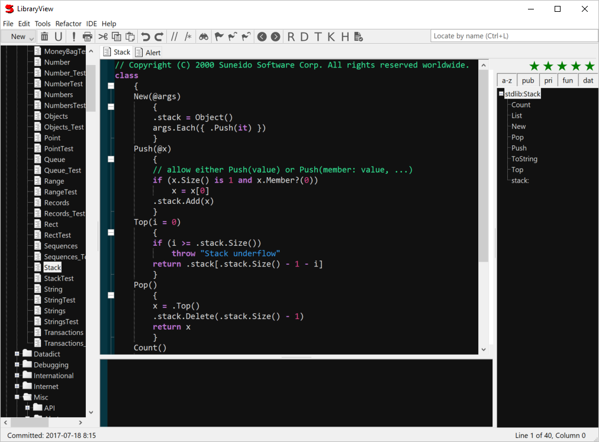

The next place you'll probably want to visit is the library browser, Library View, available from the WorkSpace IDE menu. Initially you'll see a single library displayed - stdlib. Library View normally displays all the libraries currently in use. Libraries are tables in the database with each record containing the definition of one global (capitalized) name. Library View lets you organize the contents of libraries into folders. These folders are purely organizational; they have no functional effect. Try opening up the Tools folder in stdlib and select WorkSpaceControl. The definition will show up in the right hand pane of the Library View. The tabs at the top of the right hand pane allow you to easily jump back and forth between the records you're working on. You can close tabs via the pop up menu accessed by right clicking on a tab.
Library View uses a Scintilla control (www.scintilla.org) to view and edit the source code. Scintilla supports features like syntax styling, multiple undo and redo, drag and drop editing, brace highlighting, indentation guides, line markers, folding, and calltips.
You can also find library records using the Find tab on the WorkSpace.
When you exit, Suneido saves the state of persistent windows such as WorkSpace, Library View, and QueryView. This means you can adjust the size and position of your windows and when you start up Suneido again they'll be back where you like them. Library View also saves the tabs so you're right back where you left off. (You can right click on a tab and choose Close All if you want to start fresh.)